The messenger
Switch identity from the header, start a chat, post into it, page back through it by cursor, search it, and read the same conversation as the other person. The three endpoints the brief grades, driven through the interface rather than described.
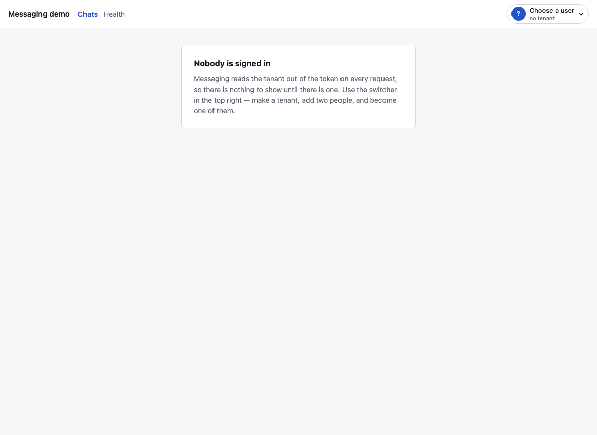
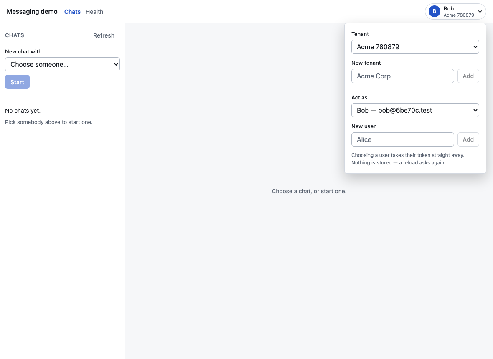
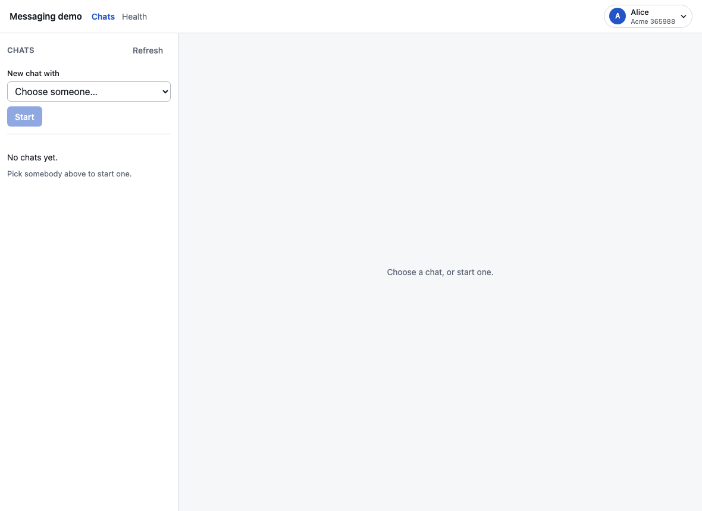
GET /conversations returns only the caller’s own, so an empty rail is the honest answer rather than a filtered one.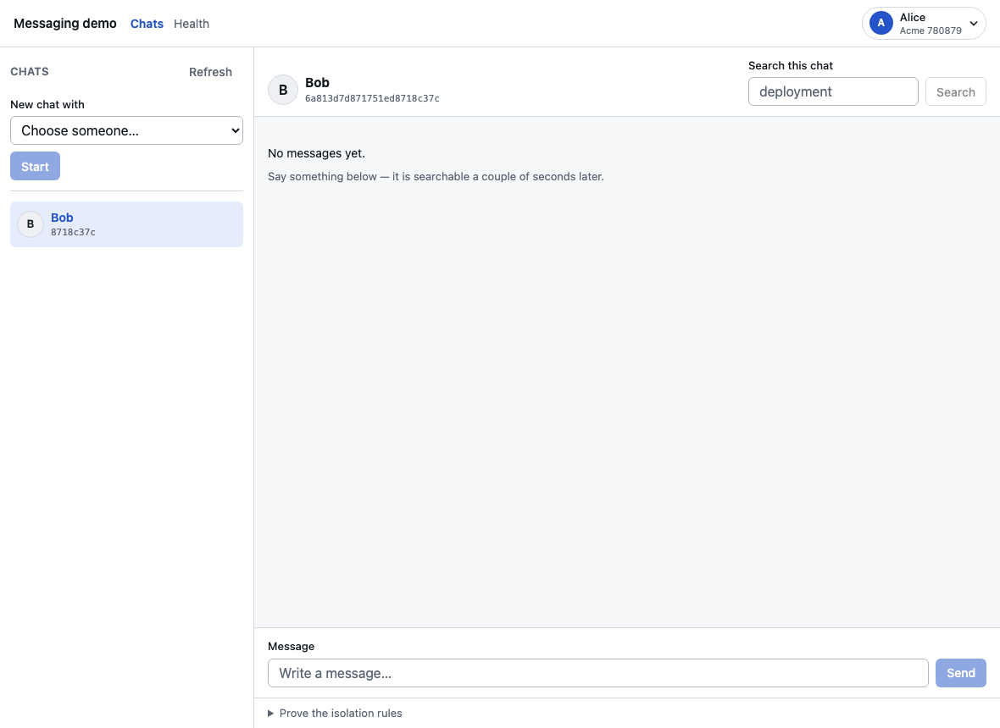
POST /conversations; the creator is added automatically, so only the other person is chosen. The header names them — it showed a fragment of their id until a test asserted otherwise.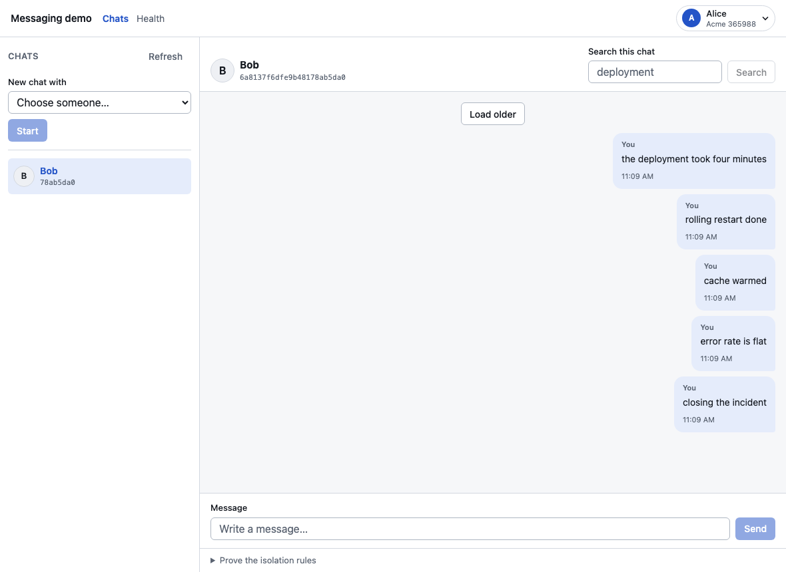
POST /messages, then GET /conversations/:id/messages. Five per page, deliberately tiny: at a sensible page size, cursor pagination is invisible in a demo. Sender and timestamp are the server’s, never the client’s.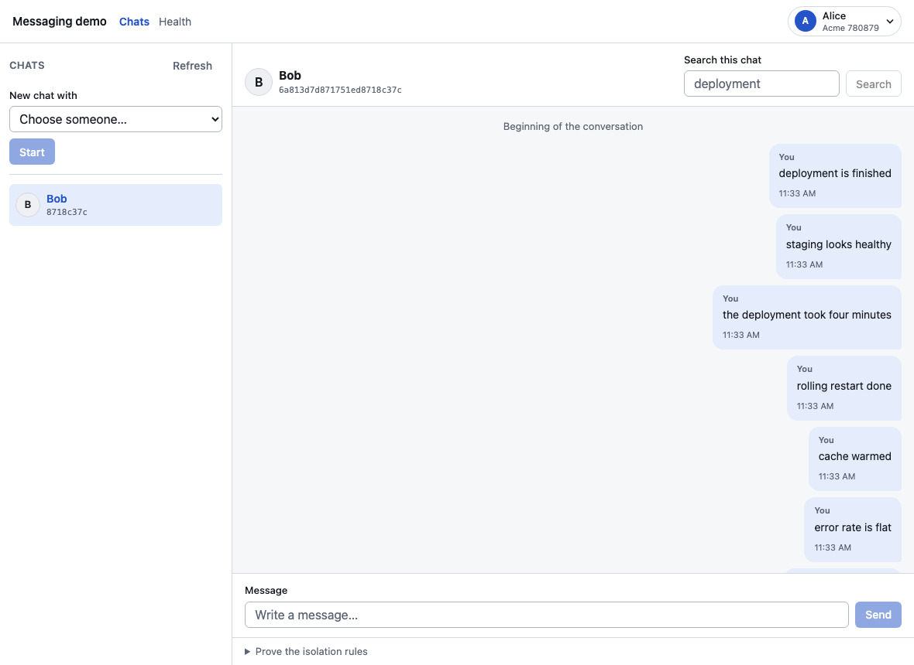
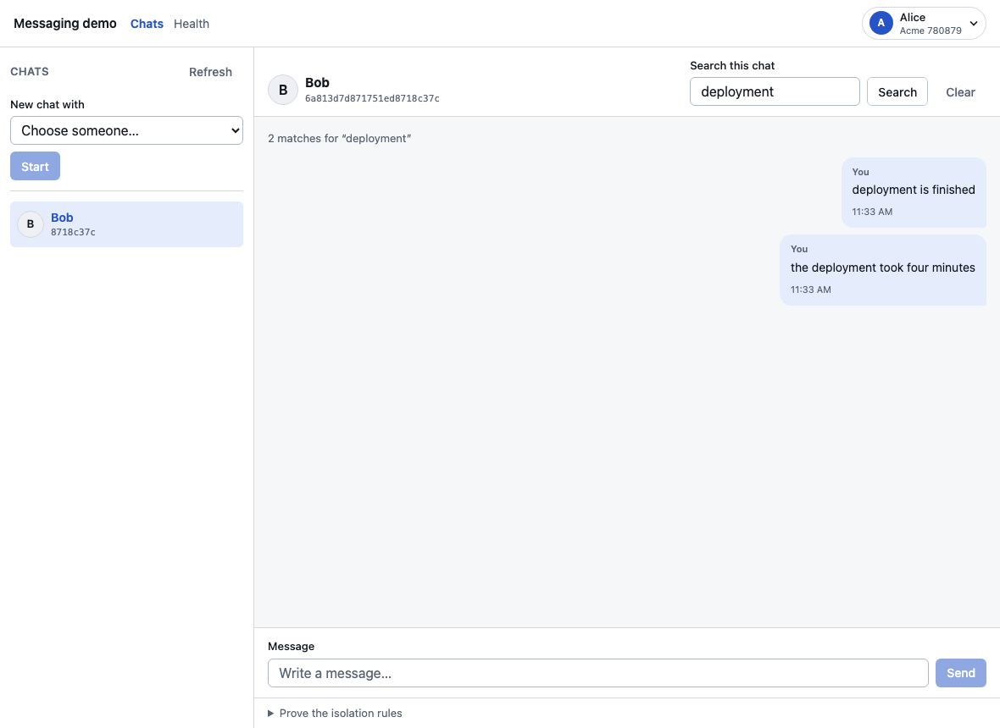
GET /conversations/:id/messages/search?q=, taking over the thread while it has a query. Typos are forgiven — deploymnet finds deployment — except in the first letter, which is the price of keeping the fuzzy term from expanding across the dictionary. Mongo → Debezium → Kafka → Elasticsearch means a message sent a second ago is not findable yet, so the test polls rather than sleeping.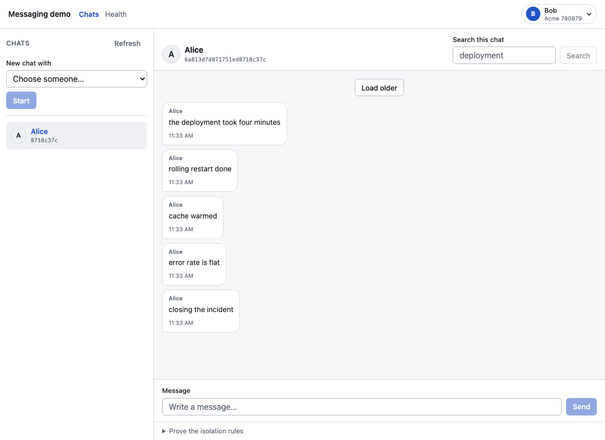
GET /conversations, the same thread from the other side — which is the whole reason the switcher is in the header rather than on a page of its own.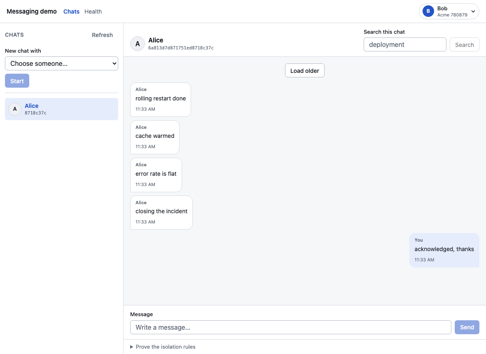
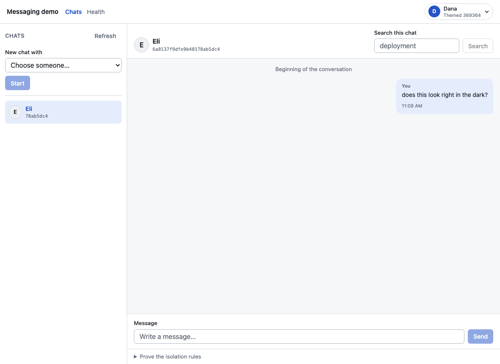
prefers-color-scheme.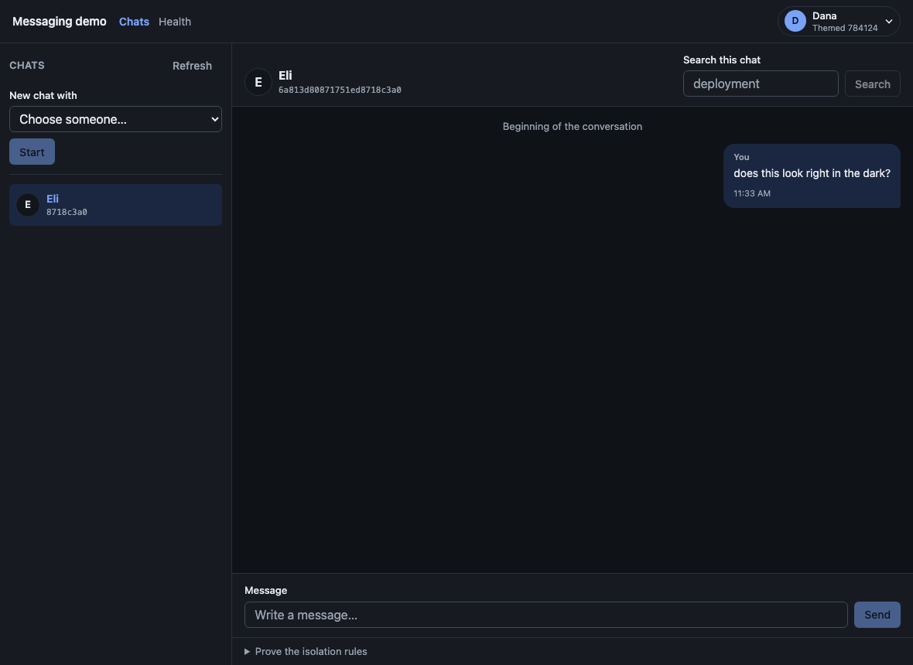
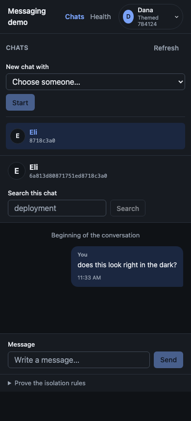
scrollWidth may not exceed clientWidth.